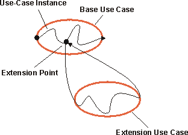
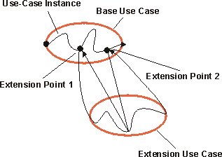

| Рекомендация: Отношение расширения |
 |
|
| Связанные элементы |
|---|
ОбъяснениеОтношение расширения связывает расширяемый вариант использования с базовым вариантом использования. Определите, в какую область базы будет добавлено расширение, с помощью ссылок на точки расширения в базовом варианте использования (см. описание точек расширения в разделе Рекомендация по рабочему продукту: Вариант использования). Обычно (но не всегда) расширяемый вариант использования носит абстрактный характер. Расширения можно использовать для следующих целей:
Расширение носит условный характер. Это означает, что его выполнение зависит от того, какие операции были проведены в процессе выполнения базового варианта использования. Базовый вариант использования не контролирует наличие условий для выполнения расширения. Эти условия описаны в рамках отношения расширения. Расширяемый вариант использования имеет доступ к атрибутам базового варианта использования и может их изменять. Однако базовый вариант использования не имеет доступа к расширениям и их атрибутам. Расширения подспудно изменяют базовый вариант использования. Можно сказать, что базовый вариант использования предоставляет модульную среду, куда можно добавлять расширения. Однако он не обладает никакой информацией об этих расширениях. Базовый вариант использования должен быть полными и завершенным. Это значит, что он должен иметь смысл и без ссылок на расширения. Однако базовый вариант использования зависит от расширений, потому что он не может выполняться без возможности следовать расширениям. Пример:
Варианты использования Начать конференц-звонок и Показать профайл абонента - расширения базового варианта использования Позвонить. Основная услуга телефонной связи представлена вариантом использования Позвонить. Примеры дополнительных услуг:
Сегменты поведения, необходимые для этих дополнительных услуг, можно представить как расширяемые варианты использования для базового варианта использования Позвонить. Вот правильный способ применения отношения расширения: поскольку вариант использования Позвонить имеет смысл сам по себе, то для понимания первичной цели базового варианта использования не нужно считывать описания расширяемых вариантов использования, и расширяемые варианты использования носят необязательный характер. Если для базового варианта использования и варианта использования "база плюс расширение" нужно намеренно создавать экземпляры или если дополнение должно изменять базовый вариант использования, следует применить обобщение вариантов использования (см. раздел Рекомендация по рабочему продукту: Обобщение вариантов использования). Расширяемый вариант использования может состоять из одного или нескольких расширяемых сегментов, каждый из которых может иметь альтернативные пути. Эти сегменты поэтапно изменяют поведение базового варианта использования. Каждый такой сегмент расширяемого варианта использования можно добавить в отдельную точку базового варианта использования. Это значит, что отношение расширения содержит список ссылок на точки расширения, число которых равно числу расширяемых сегментов расширяемого варианта использования. Каждая точка расширения должна быть описана в базовом варианте использования. Один базовый вариант использования состоит их нескольких отношений расширения. Это значит, что экземпляр варианта использования за время жизненного цикла может следовать более чем одному расширению. Расширяемый вариант использования можно распространить на несколько базовых вариантов использования, но это не влечет возникновения зависимости между этими базовыми вариантами использования. Между одними и теми же расширяемым и базовым вариантами использования может возникнуть несколько отношений расширения при условии, что расширение добавлено в разные точки базового варианта использования. Это значит, что разные отношения расширения должны ссылаться на разные точки расширения в базовом варианте использования. Расширяемый вариант использования сам может выступать как базовый вариант использования для создания отношений расширения, включения или обобщения. Например, расширяемый вариант использования может расширять другой расширяемый вариант использования, в результате чего они будут вложены друг в друга. Выполнение расширенияКогда в процессе выполнения базового варианта использования экземпляр варианта использования достигает точки расширения, производится оценка условия выполнения отношения расширения. Если условие верно или отсутствует, экземпляр варианта использования будет следовать расширению (или расширяемому сегменту, который соответствует этой точке расширения). Если условие неверно, расширение не выполняется. Расширяемый вариант использования может, как и другие варианты использования, иметь основной и дополнительные потоки операций (см. раздел Рекомендация по рабочему продукту: Вариант использования, где приведено описание структуры потока операций). Выбор пути, которому будет следовать экземпляр варианта использования при выполнении расширения, зависит от того, какие операции были выполнены до расширения (состояние экземпляра варианта использования) и какие операции выполняются при взаимодействии с субъектами при выполнении расширения. После выполнения расширения экземпляр варианта использования возвращается к выполнению базового варианта использования с того этапа, на котором он остановился.  Экземпляр варианта использования, выполняющий базовый вариант использования и его расширения. В расширяемом варианте использования может быть один или несколько расширяемых сегментов, каждый из которых связан со своей точкой расширения в базовом варианте использования. В этом случае экземпляр варианта использования возвращается к базовому варианту использования и продолжает его выполнение до следующей точки расширения, указанной в отношении расширения. По достижении точки расширения он выполняет следующий сегмент расширяемого варианта использования. Эта процедура повторяется, пока не будет выполнен последний расширяемый сегмент. Обратите внимание, что условие выполнения расширения проверяется только на первой точке расширения. Если условие верно, экземпляр варианта использования должен выполнить все последующие расширяемые сегменты.  Экземпляр варианта использования, выполняющий базовый вариант использования; расширяемый вариант использования с двумя расширяемыми сегментами. Множественность отношения расширения позволяет ограничить число потенциальных повторений всего расширения. Обратите внимание, что повторяется (и ограничивается множественностью) полностью все расширение, а не отдельный расширяемый сегмент.
Документальное оформление
отношения расширения
|

© Copyright IBM Corp. 1987, 2006. Все права защищены.. |